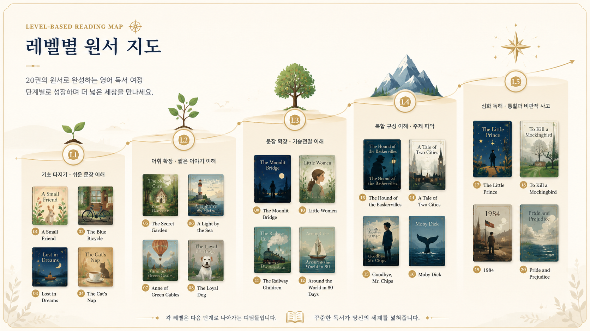
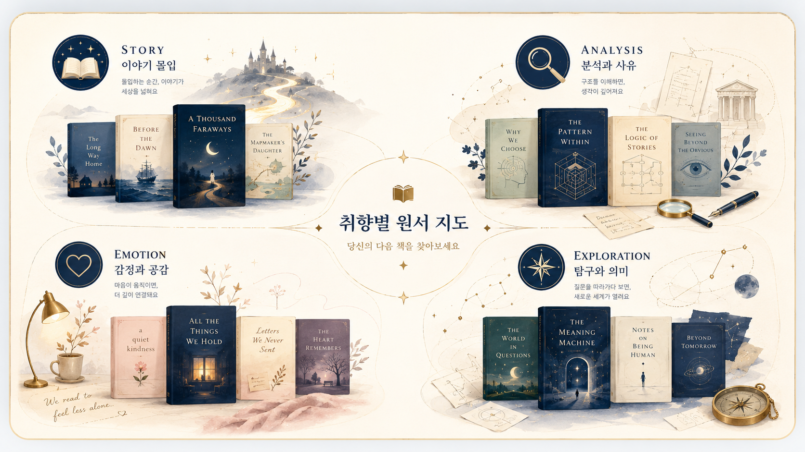

조각난 학습
단어·문법·표현을 따로 익히다 보면, 한 사람의 마음과 장면으로 이어지는 이야기의 흐름을 놓치기 쉽습니다.
영어를 오래 공부했는데도 원서 한 권은 왜 이렇게 어렵게 느껴질까요?
리터스텔라는 영어 실력만 보지 않습니다. 문장 감각, 독서 습관, 읽기 취향을 함께 보고 나에게 맞는 원서와 읽기 루트를 추천합니다.
시험지가 아니라 이야기로 읽는 영어
결과 페이지에서 리포트 메일 받기 가능
The problem
영어를 오래 놓지 않았는데도 원서 앞에서는 이상하게 작아질 때가 있습니다. 단어를 더 외우면 될 것 같고, 문법을 다시 해야 할 것 같지만, 실제로는 내 수준과 취향에 맞지 않는 책을 너무 비장하게 시작한 경우가 많습니다.
단어·문법·표현을 따로 익히다 보면, 한 사람의 마음과 장면으로 이어지는 이야기의 흐름을 놓치기 쉽습니다.
모르는 단어마다 멈추는 순간, 독서는 사라지고 해석 노동만 남습니다. 원서는 모든 단어를 붙잡는 시험지가 아닙니다.
처음부터 완벽하게 읽으려는 마음은 성실함처럼 보이지만, 완독 가능성을 가장 먼저 떨어뜨립니다.
03 Diagnosis Value
영어를 잘하느냐보다 중요한 것은 지금 어떤 문장이 읽히고, 어떤 순간에 멈추고, 어떤 방식으로 읽을 때 다시 책을 펼치게 되는가입니다.
진단 구성
시험, 커리어, 회화, 취미·교양 중 현재 목적을 확인합니다.
문장 이해 감각을 바탕으로 입문·중급·실력자 구간을 나눕니다.
스토리, 정독, 감정, 탐구 성향에 맞춰 추천 루트를 분기합니다.
04 Sample Result
사용자가 가장 궁금한 것은 질문이 아니라 “그래서 내가 무엇을 받게 되는가”입니다. 아래 카드를 누르면 페이지 안에서 샘플 결과 리포트를 A4 형식으로 미리 볼 수 있습니다.
질문은 짧습니다. 대신 결과는 원서 레벨, 읽기 유형, 추천 원서 3권, 추천 루틴까지 보여드립니다.
목적에 따라 결과 리포트의 권장 루틴이 달라집니다.
완독은 의지만으로 되지 않습니다. 내가 멈추는 지점을 알아야 오래 가는 루틴을 만들 수 있습니다.
시험 문제가 아니라 원서 문장을 만났을 때의 감각에 가깝게 답해주세요.
취향은 사소한 정보가 아닙니다. 원서를 끝까지 읽게 만드는 중요한 기준입니다.
05 Two Routes
리터스텔라는 클래식 원서 루트와 해리포터 원서 루트를 분리합니다. 하나는 문장을 오래 곁에 두는 길이고, 하나는 이미 아는 이야기로 완독의 힘을 만드는 길입니다.

좋은 문장을 오래 곁에 두고 싶은 사람에게.
한국인을 위한 클래식 원서 종이책, PDF, 필사노트, 워크북, 강독, 뉴스레터로 읽은 문장을 내 것으로 남기는 루트입니다.
이미 아는 이야기로 시작하고 싶은 사람에게.
무료 강독, 무료 단어장, 해리포터 뉴스레터로 먼저 원서 읽기의 흐름을 잡고, 2권 완독 클럽으로 이어지는 몰입형 루트입니다.
06 Free Start Materials
레벨과 유형은 결과 페이지에서 바로 확인합니다. 다음 행동은 더 많은 설명이 아니라, 실제로 시작해볼 수 있는 자료입니다.
07 Reading Map
아래 리스트는 해리포터 시리즈를 별도로 분리한 뒤, 성인 독자가 시작하기 좋은 원서를 레벨별·취향별로 다시 정리한 지도입니다.


08 Harry Potter Series
해리포터는 단순히 한 권의 추천 원서가 아니라 시리즈 전체를 따라가는 몰입형 루트입니다. 권수가 올라갈수록 분량과 독해 지구력이 함께 필요합니다.
09 Trust
영어를 조각내어 외우는 대신, 문장 속 장면과 감정, 맥락을 함께 읽습니다.
“혼자 읽었으면 몇 장 못 넘겼을 책을, 강의와 함께 끝까지 읽을 수 있었습니다.”